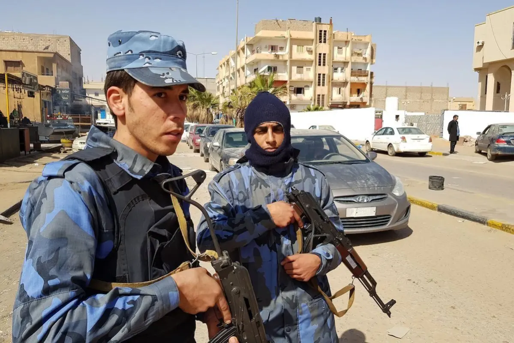

Chade
Fonte imagem:
https://upload.wikimedia.org/wikipedia/commons/thumb/4/4b/Flag_of_Chad.svg/1200px-Flag_of_Chad.svg.png
{kind=link}
Chade é um país extenso localizado na porção central da áfrica. A nação, antiga colônia francesa, é considerada um dos países menos desenvolvidos do mundo. O território chadiano apresenta grande diversidade geográfica, sendo uma região de transição entre climas árido e equatorial. A população possui uma das menores médias de idade de todo o mundo. A economia local tem como principal produção de exportação o petróleo. O Chade tem uma ampla diversidade cultural, mas sua população desfruta de um péssimo padrão de vida.
Dados Gerais
- Nome oficial: República do Chade
- Gentílico: chadiano
- Extensão territorial: 1.284.000 quilômetros quadrados
- Localização: áfrica Central
- Capital: Jamena
- Clima: semiárido
- Governo: república presidencialista sob regime militar
- Idioma: francês e árabe
- Religiões:
54% (islamismo);
34% (cristianismo);
12% (outras).
- População: 16.430.000 habitantes
- Densidade demográfica: 8,7 habitantes/quilômetro quadrado
- índice de Desenvolvimento Humano (IDH): 0,398 (baixo)
- Moeda: Franco CFA
- Produto Interno Bruto (PIB): US$ 10,09 bilhões
- PIB per capita: US$ 614
- Gini: 43%
- Fuso horário: UTC+1
- Relações exteriores:
Organização das Nações Unidas (ONU);
União Africana (UA).
- Divisão administrativa: 22 regiões administrativas, sendo elas:
|
Batha |
Canem |
Chari-Baguirmi |
|
Hadjer-Lamis |
Lac |
Uadai |
|
Uádi Fira |
Logone Ocidental |
Salamate |
|
Barh El Gazel |
Logone Oriental |
Sila |
|
Borcu |
Mandul |
Tanjilé |
|
Enedi Leste |
Maio-Quebi Leste |
Tibesti |
|
Enedi Oeste |
Maio-Quebi Oeste |
|
|
Guéra |
Médio Chari |

{kind=link}
Contexto Histórico

{kind=link}
A região correspondente ao seu atual território possui registros de ocupação humana de 5000 a.C. Foi utilizada como rota para o tráfico de escravos durante o século XVI, inclusive sendo um dos cenários onde algumas tribos capturavam grupos rivais, vendendo-os como mão de obra escravocrata aos europeus. O atual país foi uma das últimas porções colonizadas da áfrica, tendo sido ocupado por forças francesas, que exploravam suas riquezas naturais. O Chade era um importante fornecedor de algodão, além de outros produtos primários, para a França.
O Chade alcançou a independência em 1960. A partir de então, o país vivenciou diversas disputas violentas em torno do poder central, com participação ativa de militares no controle do país. O Chade registrou, nas últimas décadas, uma forte instabilidade política, inclusive com ocorrência de várias guerras civis.
Conflitos
Guerra Civil

Fonte imagem: https://upload.wikimedia.org/wikipedia/commons/8/84/33F_Sikorsky_H34_Tchad.jpg
{kind=link}
Chade sempre apresentou um cenário político instável, por ter sido formado por tribos rivais, mas a situação piorou no pós-independência, com ditadores assumindo o poder. A Guerra civil no Chade teve início em dezembro de 2005. O conflito envolveu as forças governamentais e vários grupos rebeldes chadianos - estas incluem a Frente Unida pela Mudança Democrática, a União das Forças para a Democracia e o Desenvolvimento, a Reunião de Forças pela Mudança e a Concórdia Nacional do Chade. Ao lado dos rebeldes, está a milícia árabe Janjaweed, abertamente apoiada pelo governo do Sudão. A Líbia tentou intermediar o conflito, assim como diplomatas de outros países.
Desde a sua independência da França em 1960, o Chade tem sido assolado pela guerra civil entre os árabes e muçulmanos do norte e cristãos subsaarianos do sul. Como resultado, a liderança e a presidência no Chade é disputada entre os cristãos sulistas e os muçulmanos nortistas. Quando um dos lados está no poder, o outro lado normalmente inicia uma guerra revolucionária para enfrentá-lo. A França, a antiga potência imperial de ocupação, e a Líbia, vizinha do norte, se envolveram em vários momentos ao longo desses conflitos.
Em 2003, o conflito na região de Darfur, no vizinho Sudão, se expandiu através da fronteira com o Chade.
Crise com a Líbia

{kind=link}
O Chade foi lar de grandes e ricos impérios por mais de um milênio. Porém, em 1920 a França coloniza a região, aderindo-a à áfrica Equatorial Francesa. O país conquista sua independência dos colonizadores em 1960, além de entrar numa guerra civil no mesmo ano que só teria fim em 1990. O professor Mario J. Azevedo (1998), membro do Departamento de Estudos Africanos e Afro-Americanos da Universidade da Carolina do Norte e PhD em História Africana pela Universidade de Duke, afirma que em 1960, após independência, o país finalmente era administrado por Tombalbaye, um chadiano, e mantinha boas relações com os vizinhos, inclusive com a família real líbia ao norte. Porém, a política regional muda drasticamente com o golpe orquestrado por Muammar al-Gaddafi.
O Chade tornou-se independente em 1960 e vive uma guerra civil. A Líbia é comandada por Gaddafi a partir de 1969. Acontece que, mesmo as relações entre o Chade e a Líbia não serem das melhores antes do golpe de Gaddafi, elas pioraram muito durante o seu governo (que porventura só veio a cair em 2011). O novo governante líbio apoiava o movimento Fronte de Libertação Nacional do Chade (FROLINAT), que defendia a independência do norte do Chade. Portanto, você já nota que há um possível conflito aqui: Chade vs FROLINAT (este último apoiado pelos líbios).
Após ameaças crescentes de ambos os lados (os chadienses sugerindo apoio à deposta família real líbia e Gaddafi apoiando o FROLINAT), houve, por fim, um acordo de paz entre as duas nações africanas: em 1972 é assinado um acordo de paz mediado pelo presidente do vizinho Níger. A partir de agora haverá paz, finalmente? Muitos acreditavam que sim! O Chade rompeu relações diplomáticas com Israel[1] e a Líbia emprestou US$ 920 milhões ao Chade em sinal de boa fé (AZEVEDO, 1998). Porém, meses após a assinatura do tratado de paz, a Líbia avança militarmente e invade o norte do Chade, o que é interpretado como o início da Guerra do Deserto: a anexação da Faixa de Aouzou.

{kind=link}
Inicia-se a guerra! A Faixa de Aouzou é uma área no norte do Chade que está inserido em 100 quilômetros de largura e mais 60 quilômetros adentro do país. Porém, por qual motivo a Líbia quer este território? Controle de solo rico em urânio e outros minérios; manter a França longe afastada da região; uso do território chadiano para manter bases militares líbias são as principais razões. Em 1978 temos outro acordo, desta vez um cessar-fogo, o que fez com que o governo de N’djamena (capital chadiana) reconhecesse o grupo independentista FROLINAT. Em 1979 sobe ao poder no Chade Gukuni Wedei, personagem histórico muito mais favorável aos líbios. Numa tentativa de fortalecer sua posição na presidência do país, em junho de 1980 Gukuni negociou um novo acordo chamado Tratado de Amizade e Cooperação com a Líbia. (AZEVEDO, 1998).
Com isso, temos agora uma situação inusitada: o Chade, que teve seu território dominado pela Líbia por oito anos, assinou um acordo que levou tropas do país invasor para os arredores de sua capital. 4.000 soldados líbios saíram de Maidugurui, na Nigéria, em direção ao Chade em dezembro de 1980. Em janeiro de 1981 um outro tratado bilateral surpreendente é assinado: a Líbia e o Chade formariam uma só República Islâmica. Porém, por motivos não muito claros, o tratado em questão nunca foi posto em prática.
A grande virada. Como mostrado acima, a cooperação entre Muammar Gaddafi e Gukuni era imensa, mas há uma reviravolta nesta parceria tão intensa. Dois comandantes militares chadianos foram enviados à Líbia e foram mortos por dissidentes. Era um recado claro: não abandone o acordo com a Líbia. Com uma insatisfação crescente com Gaddafi, o presidente Gukuni decide se virar contra os líbios. As forças da Líbia saem da capital N’djamena em novembro de 1981, substituídas pelas Forças Intra-Africanas da finada Organização da Unidade Africana (OUA)[2]. Agora avançamos para o ano de 1986. A Líbia ainda ocupa a Faixa de Aouzou, e faz uma investida cruzando a Red Line, delimitação terrestre feita pela França para conter o avanço tanto do Chade quanto da Líbia em território alheio. Porém, mesmo com uma superioridade militar, a Líbia perde o conflito.
Como uma nação superior militarmente, com mais armamentos, pessoal e treinamento perde para uma nação mais fraca? Esta pergunta é feita por diversos acadêmicos, militares e civis em geral. Azevedo (1998) cita alguns dos principais motivos:
- A Líbia não conhecia o terreno;
- Baixa moral dos mercenários contratados pela Líbia – não havia um porquê de lutar; cenário oposto às tropas chadienses, que tinha moral alta e comandantes determinados;
- Insatisfação doméstica na Líbia;
- Bombardeio estadunidense à Benghazi e Trípoli em abril de 1986;
- Equipamento pesado do exército líbio, o que deixou as tropas mais lentas.
Com isto, o Chade detém o avanço ainda mais profundo dos líbios em seu território, mas a origem de toda a guerra, a Faixa de Aouzou, ainda era ocupada. Tudo muda com a ascensão ao poder, via golpe de estado, de Idris Deby. O ditador que está no poder até os dias de hoje, meados de 2020, alcançou na época em que assumiu a presidência chadiana, acordos de paz com a Líbia. E então, estes novos acordos eram sinônimo de Paz Negativa [3] (GALTUNG, 1996) como os acordos assinados por Gukuni? Ou seriam, finalmente, um primeiro passo para a Paz Positiva? Para saber, precisamos entender o que ocorreu depois de 1990.
Os dois países tentaram chegar numa negociação bilateral, mas não deu certo. Portanto, em setembro de 1990 ambos concordaram em submeter a disputa territorial à Corte Internacional de Justiça (CIJ). Em 1994 a CIJ chega à conclusão final: a Líbia deve remover sua administração e suas forças militares da Faixa de Aouzou. Em abril de 1994 uma comissão com 25 militares líbios e 25 militares chadianos fiscalizaram a remoção das tropas da Líbia, o que ocorreu em maio do mesmo ano. Em abril de 1994 o Secretário-Geral da ONU sugeriu que o Conselho de Segurança criasse o Grupo de Observação da Faixa de Aouzou das Nações Unidas (UNASOG, na sigla em inglês), que foi fundado com a resolução 915 do Conselho de Segurança da ONU. Após negociações e atuação dos grupos de ação conjunta. Como diz o documento da UNASOG:
No dia 30 de maio de 1994, os governos do Chade e da Líbia assinaram uma Declaração Conjunta. De acordo com a Declaração, a retirada da administração líbia e de seu exército da Faixa de Aouzou foi realizada com satisfação por ambas as partes e monitoradas pela UNASOG. O Observador Militar da UNASOG assinou a Declaração como testemunha [4].
A guerra, por fim, acaba! O território chadiano retorna para o governo central do Chade, em N’djamena. A guerra civil acaba pouco antes, em 1990. As relações diplomáticas líbias-chadienses melhoraram após a boa fé no julgamento realizado pela CIJ com sugestão/mediação da ONU. Infelizmente, não podemos afirmar que a guerra era a principal fonte de instabilidade do país. Mesmo vinte seis anos após seu fim, o país não está numa situação tão melhor que na década de 1970 e 1980. Em documento do ano passado, o Programa das Nações Unidas para o Desenvolvimento (PNUD, 2019) apontava o Chade como o 187º país num ranking de 189 países no índice de Desenvolvimento Humano (IDH), com pontuação de 0,401. A expectativa de vida em 2018 era de apenas 54 anos. O país também vive sob o mesmo governo de Idris desde 1990. Em 2018, via reforma institucional, removeu o cargo de Primeiro-Ministro, figurando agora como Chefe de Estado e Chefe de Governo, de facto e de juri. Infelizmente o fim da Guerra não significou o fim da pobreza extrema na qual vive o país.
Vídeos
Lago Chade: mais de um milhão de pessoas deixam suas casas enquanto crise se aprofunda
Presidente do Chade morre após conflito contra rebeldes
Fontes
https://www.preparaenem.com/geografia/chade.htm
https://professormarcianodantas.blogspot.com/2014/04/conflitos-no-chade-e-na-republica.html